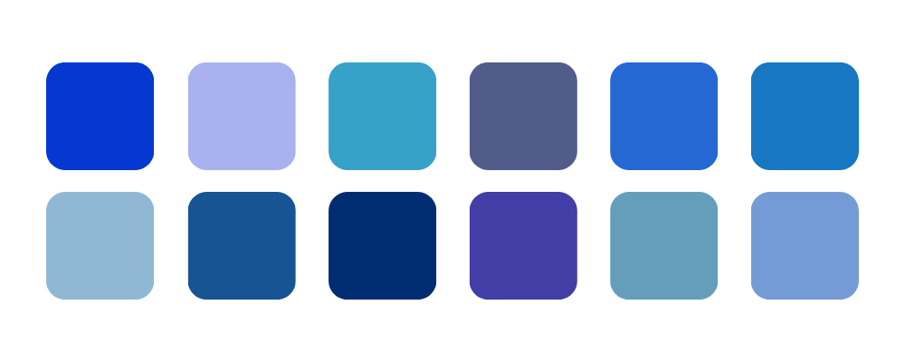
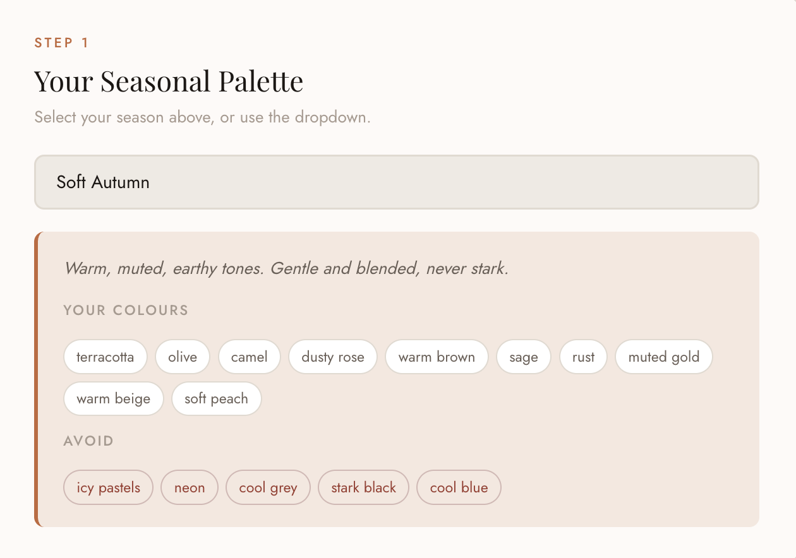
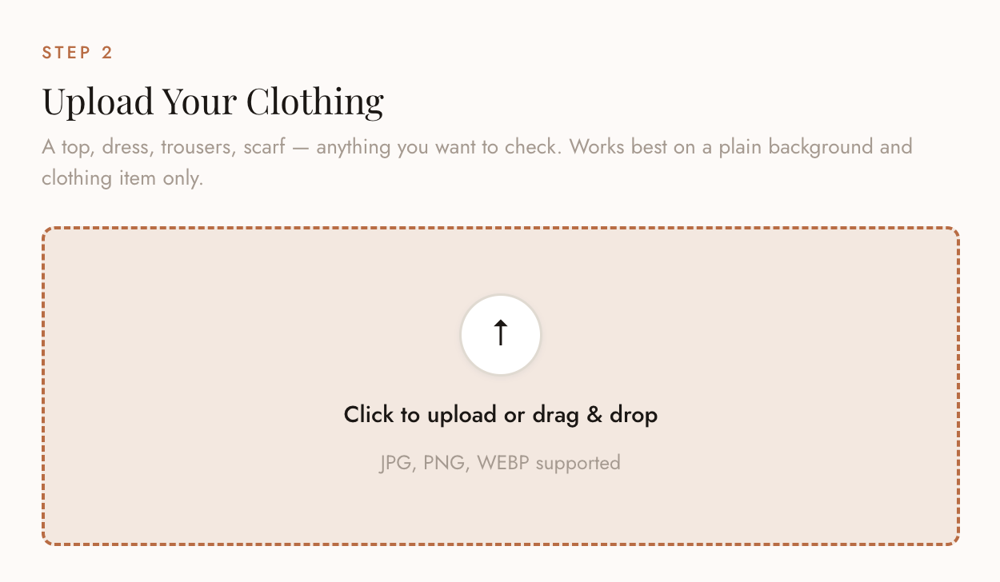
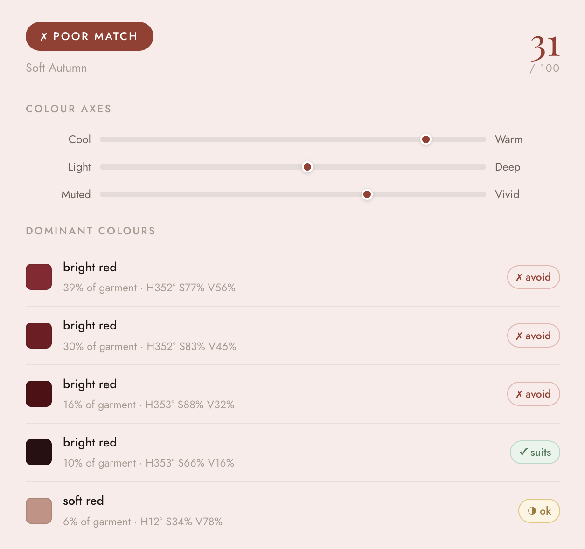

A React app that identifies the dominant colours in clothing items and evaluates their compatibility with the 12 seasonal colour palettes.
Have you ever worn an outfit and received compliments for how it seems to make you glow? That’s the idea behind colour analysis, which has become one of the hottest trends recently. It's the process to identify the colours that best complement your natural skin tone, hair, and eye colour. People are typically categorised into 12 seasonal palettes across Spring, Summer, Autumn, and Winter.
I was recently analysed as a Soft Autumn, and while excited to shop accordingly, I quickly realised how difficult it is to distinguish warm versus cool tones in real-world clothing.
Give it a go yourself. Can you tell which are the warm and cool tones?

After hours of shopping, Googling whether a shade was cool or warm tone, whether it suited my season or not, I thought there must be an easier way.
My problem to solve: Make it easier, faster, and more accessible to identify whether clothing items match a person’s colour palette without needing a professional by your side.


Early versions relied on simple HSB averaging, which often produced inaccurate results. I improved accuracy by introducing LAB colour space for perceptual measurement, k-means clustering for dominant colour separation, and a seasonal scoring system based on real colour analysis principles. I used ChatGPT throughout this process as a debugging partner, sharing scores and asking for diagnosis. That back-and-forth loop — implement, test, share results, refine. This pushed the accuracy from around 60% to what I'd estimate is 85–90% on typical clothing colours.
To prevent backgrounds from affecting results, I built a lightweight in-browser filtering method to exclude near-neutral pixels, with a fallback approach for neutral garments like black, white, and grey clothing.
